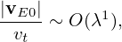

To facilitate the simplification of the Vlasov equation in the low-frequency regime, we assume the following orderings (some of which are roughly based on experiment measure of fluctuations responsible for tokamak plasma transport, some of which can be invalid in some interesting cases.) These ordering are often called the standard gyrokinetic orderings.
Define the spatial scale length L0 of equilibrium quantities by L0 ≈ Fg∕|∇XFg|. Assume that L0 is much larger than the thermal gyro-radius ρi ≡ vt∕Ω, i.e., λ ≡ ρi∕L0 is a small parameter, where vt =  is the thermal velocity. That is
|
| (60) |
The equilibrium (macroscopic) E0 × B0 flow, i.e.,
|
| (61) |
is assumed to be weak with
|
| (62) |
We consider low frequency perturbations with ω∕Ω ∼ O(λ1), then
|
| (63) |
We assume that the amplitudes of perturbations are small. Specifically, we assume
|
| (64) |
where δΦ is the perturbed scalar potential defined later in Eq. (69).
The perturbation is assumed to have a long wavelength (much longer than ρi) in the parallel direction
|
| (65) |
and have a short wavelength comparable to the thermal gyro-radius in the perpendicular direction
|
| (66) |
Combining Eq. (65) and (66), we obtain
|
| (67) |
i.e., the parallel wave number is one order smaller than the perpendicular wave-number.]
In terms of the scalar and vector potentials δΦ and δA, the perturbed electromagnetic field is written as
|
| (68) |
and
|
| (69) |
Then
|
| (70) |
|
| (71) |
Using the above orderings, it is ready see that δE∥ is one order smaller than δE⊥, i.e.,
|
| (72) |